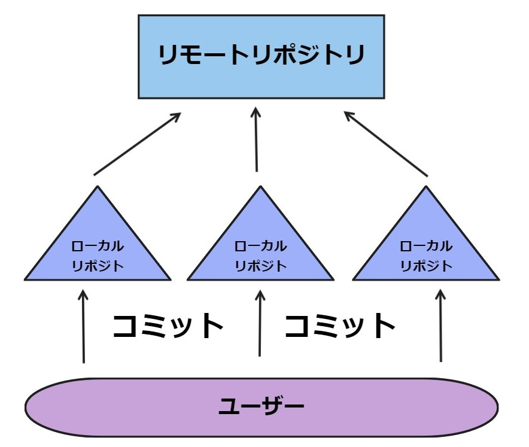

GITとは分散型バージョン管理システム!!
一般的にGITとは「分散型バージョン管理システム」だと称されることが多い。ではなぜ分散型などと言われるのだろうか？
GITの大きな特徴に、各ユーザーに全履歴を含んだリポジトリの完璧な複製が与えられることがある。
これによりオフライン環境でも
作業を進めることができる。これがGITが分散型バージョン管理システムと言われる理由である。
この他にも、古いバージョンに簡単に戻せる、新しいファイルと古いファイルを同時に管理できる、編集履歴を複数人で共有できる、複数人の編集を１つに統合できる
こともGITが分散型バージョン管理システムと言われる理由として挙げられる。
☟☟図にするとこんな感じ☟☟

HTNLとは？
プログラミングをするときに使われる言語。
＜br＞などのホームページなどのレイアウトを形作る言語